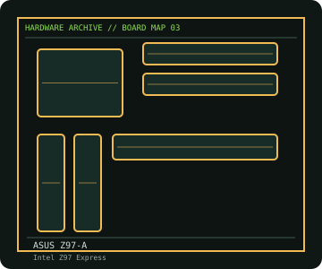

[ INDIVIDUAL COMPONENT // MOTHERBOARDS ]
ASUS Z97-A
ATX Z97 board with four DDR3 slots, M.2 and SATA Express storage, and model-specific UEFI CPU support. This entry identifies one product model; revision and firmware qualifications are stated below.

IDENTIFICATION: Check the PCB silkscreen, printed revision, assembly code, and firmware identifier on the actual board. Similar model names and PCB revisions may use different specifications or firmware.
Specifications
| Catalog subcategory | Enthusiast Intel platforms |
|---|---|
| Exact board / model | ASUS Z97-A |
| Era / platform | Intel Haswell / Broadwell LGA1150 desktop platform, 2014 |
| CPU and socket | Intel LGA1150 4th-generation Core, Pentium and Celeron processors; 5th-generation support is BIOS/CPU-list dependent |
| Chipset / controller | Intel Z97 Express |
| Memory | Four DDR3 DIMM slots, dual-channel, up to 32 GB; XMP and overclocked rates are configuration-dependent |
| Expansion and connectivity | Three PCIe x16-length slots with shared-lane limits, two PCIe x1 and two PCI; six SATA 6 Gb/s, one M.2 Socket 3 and SATA Express; Gigabit LAN, USB 3.0 and onboard audio |
| Firmware | ASUS UEFI BIOS; match the supported CPU list and minimum BIOS version to the exact processor before installation. |
Compatibility and revision notes
The M.2 socket's supported SATA/PCIe modes and lane sharing depend on device and board configuration. This is a DDR3 board; DDR4 modules are not electrically or mechanically compatible.
Physical socket fit alone does not establish compatibility. Verify the exact processor support list, minimum BIOS, memory population rules, case dimensions, power connectors and shared-lane behavior in the cited model documentation before installation.
Preservation and repair
Check LGA1150 socket contacts, the M.2 mounting screw/standoff and SATA Express connector integrity. Use the manual's memory-slot order and clear-CMOS procedure. Record the BIOS version and restore a known-good default profile after replacing the coin cell.
For an archive record, photograph the PCB and labels before cleaning; note serial/date codes, BIOS/BMC versions, accessories, known faults, repairs, and test conditions. Use ESD-safe handling and never apply power with loose conductive hardware beneath the board.
Sources & further reading
- ASUS — Z97-A specificationsManufacturer specifications for the Z97-A.
- ASUS — Z97-A support and manualsBoard manual, BIOS releases and support resources.
Manufacturer model documentation is the primary reference; confirm the document revision and board markings when specifications vary by revision or SKU.